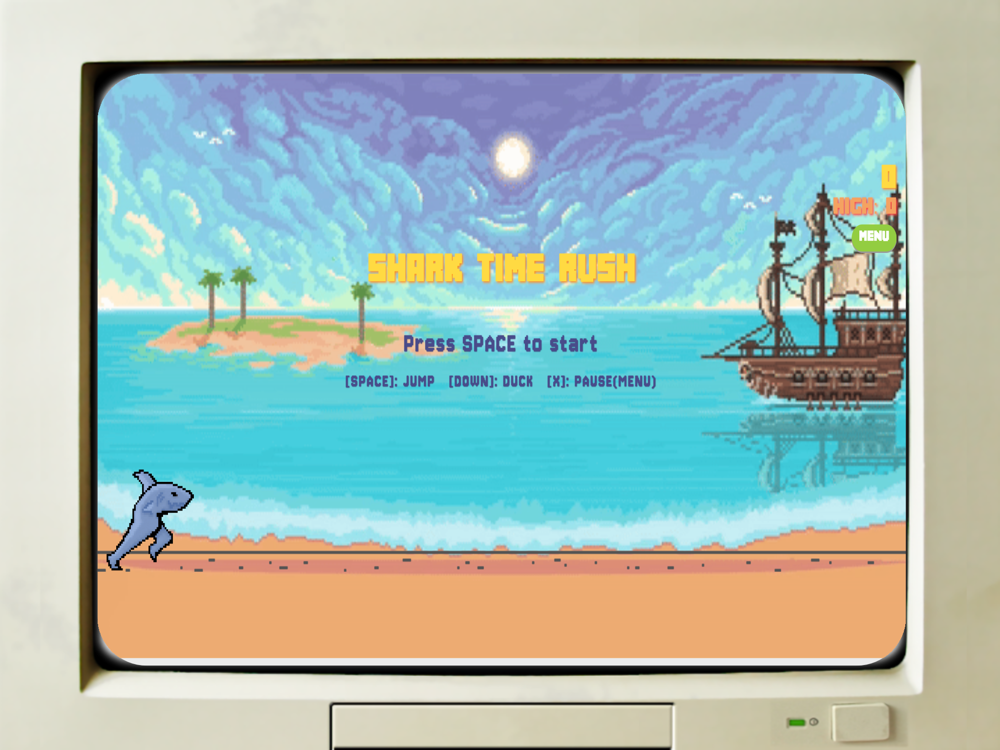
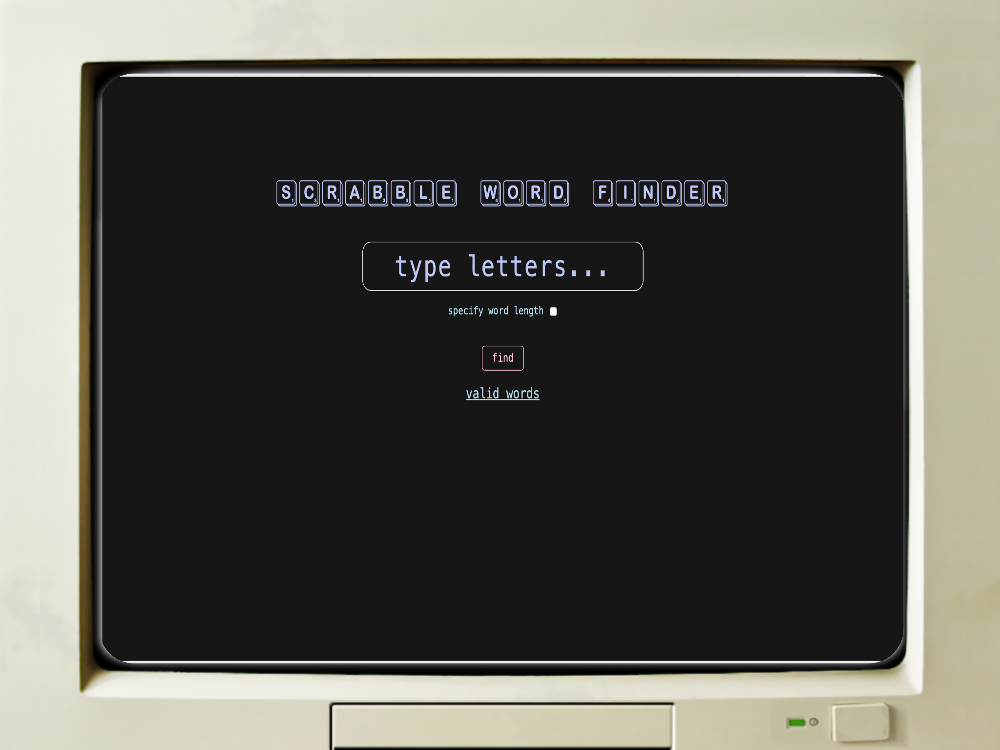

JavaScript, HTML/CSS, Git
This is an endless runner web-based game I developed with a team of 5 developers using Agile methodology throughout the project.
JavaScript, HTML/CSS, Git
Developed a user-friendly website that helps beginner Scrabble players improve their vocabulary by generating valid words and their corresponding scores from user-provided letters.